전자산업기사 (2014-07-20 기출문제)
1과목: 전자회로
1. 전압 증폭도가 항상 1보다 작은 증폭회로는?
- 컬렉터 접지 증폭회로
- 이미터 접지 증폭회로
- 베이스 접지 증폭회로
- 게이트 접지 증폭회로
(정답률: 68%)

2. 다음과 같은 회로의 출력 전압은?
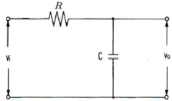
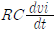
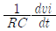
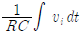
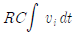
(정답률: 76%)
3. 부궤환 증폭회로의 일반적인 특징으로 옳지 않은 것은?
- 궤환시 왜율이 증가한다.
- 궤환시 이득이 감소한다.
- 궤환시 안정도(S)가 향상된다.
- 궤환시 주파수특성이 개선된다.
(정답률: 76%)
4. 차동증폭기에서는 동상제거비(CMRR)가 클수록 양호한 특성을 갖는다. 이상적으로 CMRR=∞인 차동증폭기에서는 회로에서 발생하는 잡음이 출력 단자에 어떻게 나타나는가?
- 발생한 잡음의 크기 그대로 나타난다.
- 발생한 잡음은 증폭되어 출력에 나타난다.
- 발생한 잡음의 크기보다 작아져서 나타난다.
- 잡음이 발생하여도 출력 단자에는 나타나지 않는다.
(정답률: 79%)
5. 700[kHz]인 반송파를 2000[Hz]로 100[%] 진폭변조 하였을 때 점유주파수 대역은?
- 2000[Hz] ~ 700[kHz]
- 700[kHz] ~ 702[kHz]
- 698[kHz] ~ 702[kHz]
- 698[kHz] ~ 700[kHz]
(정답률: 85%)
6. 시미트 트리거 회로에 정현파 입력을 넣었을 때의 출력파형은?
- 삼각파
- 계단파
- 톱니파
- 구형파
(정답률: 83%)
7. AM 변조에서 반송파의 전력이 500[mW], 변조도가 60[%]일 때 피변조파의 전력은 몇 [mW] 인가?
- 180[mW]
- 300[mW]
- 590[mW]
- 900[mW]
(정답률: 80%)
8. 전원 주파수가 60[Hz]를 사용하는 정류회로에서 120[Hz]의 맥동 주파수를 나타내는 회로 방식은?
- 단상 반파정류회로
- 단상 전파정류회로
- 삼상 반파정류회로
- 삼상 전파정류회로
(정답률: 83%)
9. 이미터 접지 증폭기에서 역포화 전류가 0.01[mA], 베이스 전류가 1[mA]일 때, 컬렉터 전류는 약 몇 [mA]인가? (단, β=100이다.)
- 10[mA]
- 20[mA]
- 100[mA]
- 200[mA]
(정답률: 64%)
10. 비반전증폭기의 계단응답에서 상승시간이 증가한다는 것은 어느 것과 관계가 깊은가?
- 대역폭이 좁아진다.
- 대역폭이 넓어진다.
- 전압증폭률이 감소한다.
- 전류증폭률이 증가한다.
(정답률: 67%)
11. 이미터 플로어(Emitter Follower) 증폭기에 대한 설명으로 가장 적합한 것은?
- 전류이득은 작다.
- 전압이득이 0에 가깝다.
- 입력저항이 낮아진다.
- 출력은 이미터 단자에서 얻는다.
(정답률: 68%)
12. 무궤환 시 증폭도를 A, 궤환시 증폭도를 Af, 궤환율을 β라 할 때, A가 대단히 크면 Af는 주로 무엇에 의해서 결정되는가?
- Aβ
- 1/β
- 1/(βA)
- A/(1+A)
(정답률: 77%)
13. 다음과 같은 JFET 증폭기에서 VDD=10[V], Id=5[mA]일 때 VDS는?
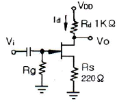
- 2[V]
- 3.9[V]
- 4.5[V]
- 6[V]
(정답률: 67%)
14. 다음 중 연산증폭기에 대한 설명으로 옳은 것은?
- 입력단자는 반전 입력(+)과 비반전 입력(-) 두개가 있다.
- 이상적인 연산증폭기의 주파수 대역폭은 매우 좁아 주파수의 선택도가 매우 뛰어나다.
- 이상적인 연산증폭기의 출력임피던스는 무한대의 값을 갖기 때문에 버퍼회로에 이용된다.
- 연산증폭기는 선형 집적회로로 동작 전압이 낮고 신뢰도가 매우 높다.
(정답률: 67%)
15. 원자핵 주위의 궤도에 있는 전자 중 에너지에 의해 최외각에 있는 가전자를 잃는 과정을 무엇이라 하나?
- 이온화
- 자유전자
- 공유결합
- 에너지 준위
(정답률: 81%)
16. 다음 중 정전압회로에서 전류를 제한하는 이유로 가장 적합한 것은?
- 리플을 감소시키기 위하여
- 정전압회로를 보호하기 위하여
- 전압변동률을 개선하기 위하여
- 일정한 출력전압을 유지하기 위하여
(정답률: 80%)
17. 다음 회로는 컬렉터 동조 발진기이다. 발진 주파수를 fo, 동조 주파수를 fr이라 할 때 fo와 fr이 어떠한 관계에 있을 때 안정적으로 발진하는가? (단, 입력측은 유도성이라 한다.)
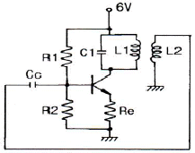
- fo = fr
- fo > fr
- fo < fr
- fo = 2fr
(정답률: 59%)
18. B급 푸시풀 증폭기에서 고유하게 발생하는 왜곡으로 가장 적합한 것은?
- 비선형 왜곡
- 항복 왜곡
- 드리프트 왜곡
- 크로스오버 왜곡
(정답률: 81%)
19. RC 결합 저주파 증폭기에서 앞 단에 흐르는 전류 성분 중 다음 단으로 넘어가는 것은?
- 직류분
- 교류분
- 직류분 + 교류분
- 직류분 - 교류분
(정답률: 76%)
20. 전압-직렬 궤환 증폭기에서 입력 임피던스와 출력 임피던스는 어떻게 되는가?
- 입력 임피던스는 증가하고 출력 임피던스는 감소한다.
- 입력 임피던스는 감소하고 출력 임피던스는 증가한다.
- 입ㆍ출력 임피던스 값의 변화가 없다.
- 입ㆍ출력 임피던스 값이 모두 증가한다.
(정답률: 79%)
2과목: 전기자기학 및 회로이론
21. 유전율이 각각 다른 두 종류의 유전체 경계면에 전속이 입사될 때 이 전속은 어떻게 되는가?
- 굴절
- 반사
- 회절
- 직진
(정답률: 81%)
22. 다음 조건 중 틀린 것은? (단, χm : 비자화율, μr : 비투자율이다.)
- 물질은 또는 의 값에 따라 역자성체, 상자성체, 강자성체 등으로 구분한다.
- χm>0, μr<1이면 상자성체
- χm<0, μr<1이면 역자성체
- μr≫1이면 강자성체
(정답률: 65%)
23. 권수 1회의 코일에 5[Wb]의 자속이 쇄교하고 있을 때 10-1[sec] 사이에 이 자속이 0으로 변하였다면 이때 코일에 유도되는 기전력은 몇 [V]인가?
- 10
- 20
- 40
- 50
(정답률: 59%)
24. 15[MHz]의 전자파의 파장은 몇 [m]인가?
- 8
- 15
- 20
- 25
(정답률: 68%)
25. 공기 중에서 접지된 무한 넓이 평면 도체판으로부터 r(m) 떨어진 점에 Q(C)의 점전하를 놓을 때, 이 점전하에 작용하는 힘의 크기는 몇 [N]인가?
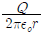
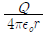
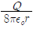
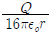
(정답률: 62%)
26. 자속밀도 B에 관한 식으로 항상 성립되는 식은?
- grad B = 0
- rot B = 0
- div B = 0
- B = 0
(정답률: 82%)
27. 반지름 a인 접지 도체구의 중심에서 d(m)되는 곳에 점전하 Q가 있다. 도체구에 유기되는 영상전하(C) 및 그 위치(중심에서의 거리(m))는? (단, d>a 이다.)
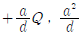
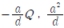
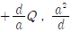
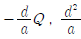
(정답률: 67%)
28. L=16[mH]의 자기인덕턴스를 가진 회로가 있을 때, 이 회로에 전류 10[A]가 흐를 때 이 회로가 만드는 자계 중에 저축되는 자기 에너지는 몇 [Wh]인가?
- 2.2×10-5
- 2.2×10-4
- 2.2×10-3
- 2.2×10-2
(정답률: 58%)
29. 비유전율 εs=2.8인 유전체에 전속밀도 D=3.0×10-7a[C/m2]를 인가할 때 분극의 세기 P는 약 몇 [C/m2]인가? (단, 유전체는 등질 및 등방향성이라 한다.)
- 1.93×10-7 a
- 2.93×10-7 a
- 3.50×10-7 a
- 4.07×10-7 a
(정답률: 63%)
30. 다음 식 중 맥스웰의 적분방정식이 아닌 것은?
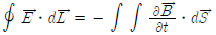
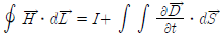
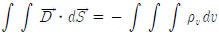
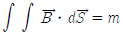
(정답률: 60%)
31. 그림과 같은 회로의 임피던스 행렬에서 임피던스 파라미터 Z21은?
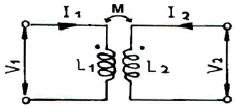
- SL1
- SL2
- SM
- SL1L2
(정답률: 65%)
32. 다음 회로에서 저항 15[Ω]에 흐르는 전류는?
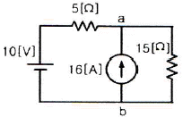
- 1.5[A]
- 3.0[A]
- 3.5[A]
- 4.5[A]
(정답률: 59%)
33. 무한히 긴 전송 선로의 반사 계수는?
- 0
- 0.1
- 0.2
- 1
(정답률: 77%)
34. L1=25[H], L2=9[H]인 전자결합 회로에서 결합계수 K=0.5일 때 상호 인덕턴스 M은 몇 [H]인가?
- 0.25[H]
- 7.5[H]
- 9[H]
- 11.5[H]
(정답률: 70%)
35. 다음 회로의 전압비 전달함수는?
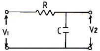
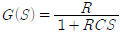
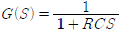
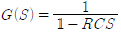
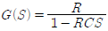
(정답률: 60%)
36. E[volt]의 전압을 라플라스 변환하면?
- E
- E2
- ES
- E/S
(정답률: 79%)
37. 순시값이
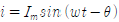
인 정현파 전류의 실효값은?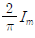
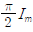
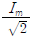
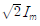
(정답률: 74%)
38. R-L-C 직렬회로에서 전원전압을 E라 하고, L 및 C에 걸리는 전압을 각각 EL 및 EC라 할 때 선택도 Q는?
- E/EL
- EC/EL
- E/EC
- EL/E
(정답률: 53%)
39. R-C 직렬 회로에서 시정수 T[sec]는?
- RC
- 1/(RC)
- √(RC)
- 1/√(RC)
(정답률: 73%)
40.
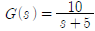
에서 주파수 전달 함수의 위상각 θ는 몇 상한에 위치하는가?- 1상한
- 2상한
- 3상한
- 4상한
(정답률: 68%)
3과목: 전자계산기일반
41. 2개의 오퍼랜드에 대해 시행되는 논리 연산으로서 오퍼랜드의 비트 패턴 p, q가 각각 1인 경우에만 결과가 1인 연산은?
- AND
- OR
- NOT
- Complement
(정답률: 77%)
42. 부동소수점의 나눗셈 과정에서 필요없는 연산은?
- 정규화
- 지수 조정
- 지수 뺄셈
- 가수 나누기
(정답률: 66%)
43. 그레이 코드(Gray code) 1100을 2진수로 표시하면?
- 1000
- 1001
- 1010
- 1011
(정답률: 73%)
44. 다음 중 전달지연시간이 가장 짧은 것은?
- AS-TTL(Advanced Schottky TTL)
- 표준 TTL(Transistor-Transistor Logic)
- F TTL(Fast TTL)
- 4000 시리즈 CMOS
(정답률: 71%)
45. 드 모르간(De Morgan)의 정리를 옳게 나타낸 것은?
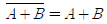
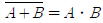
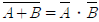
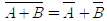
(정답률: 77%)
46. CPU 내부에서 발생하며, 수행 시에 발생된 비정상상태 또는 내부 문제를 해결하기 위해 특수한 인터럽트 명령어에 의해 발생하는 인터럽트는 무엇인가?
- 기계 착오 인터럽트
- 프로그램 인터럽트
- 내부 인터럽트
- 입출력 인터럽트
(정답률: 77%)
47. 어드레스선이 8개, 데이터선이 8개인 ROM의 기억 용량은 몇 바이트(byte)인가?
- 64
- 256
- 512
- 1024
(정답률: 74%)
48. 새로운 데이터가 스택(stack)에 삽입될 때 Top의 값은?
- 1
- 0
- 1씩 감소
- 1씩 증가
(정답률: 72%)
49. 다음 중 프로그램 내의 순환 프로그램(Recursive Program)에 쓰이는 것은?
- Queue
- Deque
- Stack
- List
(정답률: 73%)
50. 스택 포인터(SP: stack point)는 항상 스택의 어느 곳을 가리키는가?
- PUSH
- POP
- BOTTOM
- TOP
(정답률: 70%)
51. 컴퓨터 시스템을 구성하는 가장 큰 2가지 요소는?
- 입력장치, 출력장치
- 하드웨어, 소프트웨어
- 시스템, 데이터
- 제어장치, 기억장치
(정답률: 77%)
52. 다음 중 스택(stack)과 관계가 없는 것은?
- FIFO
- LIFO
- PUSH
- POP
(정답률: 70%)
53. 하나의 명령 사이클을 실행하는데 2개의 머신 사이클이 필요하다고 했을 때 CPU 클록 주파수를 10[MHz]로 동작시켰다. 이 때 1개의 명령 사이클을 실행하는데 걸리는 시간은? (단, 각각의 머신 사이클은 5개의 머신 스테이트로 구성되어 있다.)
- 0.1[μs]
- 1[μs]
- 10[μs]
- 100[μs]
(정답률: 57%)
54. 16bit로 된 레지스터가 있다. 첫째 비트가 부호비트라 할 때 2의 보수로 나타낼 경우 이 레지스터가 나타낼 수 있는 수의 범위는?
- 0 ~ 32768
- 0 ~ 32767
- -32767 ~ 32768
- -32768 ~ 32767
(정답률: 63%)
55. 객체지향 언어에서 각 객체는 객체의 상태를 변경시킬 수 있는 프로시저 혹은 함수를 가지는 것을 무엇이라고 하는가?
- 클래스(Class)
- 메소드(Method)
- 상속(Inheritance)
- 다형성(Polymorphism)
(정답률: 65%)
56. 다음 중 주소 부분에서 실제 데이터가 저장되어 있는 메모리의 주소를 지정하는 방식은?
- direct addressing mode
- immediate addressing mode
- indirect addressing mode
- temporary addressing mode
(정답률: 40%)
57. 원시프로그램(source program)을 컴파일(compile)하여 얻어지는 프로그램은?
- 실행 프로그램
- 시스템 프로그램
- 유틸리티 프로그램
- 목적 프로그램
(정답률: 76%)
58. 휘발성 기억장치로서 전원 공급이 중단되면 기억장치 내의 데이터가 지워지는 특징을 가진 소자는?
- ROM
- RAM
- 레지스터
- 플래시 메모리
(정답률: 73%)
59. 마이크로컴퓨터에서 지워지면 안 되는 시스템 프로그램을 기억시키는 소자는?
- RAM
- ROM
- CD-ROM
- Disc
(정답률: 74%)
60. 서로 다른 변수가 같은 기억 장소를 가질 때 생기는 착오현상을 무엇이라고 하는가?
- dynamic nesting
- side effects
- aliasing
- binding
(정답률: 66%)
4과목: 전자계측
61. 계수형 주파수 카운터(frequency counter)로서 초저주파 측정시 가장 정밀하게 측정할 수 있는 방법은?
- 직접 주파수 측정법
- 시간에 따른 주기 측정법
- 전압에 의한 주파수 측정법
- 회전수에 따른 주파수 측정법
(정답률: 66%)
62. 다음 중 고주파 주파수 측정에 사용되지 않는 것은?
- 진동편형 주파수계
- 흡수형 주파수계
- 레헤르선(Lecher wire) 주파수계
- 버터플라이(butterfly)형 주파수계
(정답률: 57%)
63. 리플(Ripple) 함유량이 4[%]이고, 맥동분 전압이 6[V]일 때, 직류 전압은?
- 250[V]
- 200[V]
- 150[V]
- 100[V]
(정답률: 63%)
64. 정류형 계기의 눈금은 어떠한 값을 나타내는가?
- 평균값
- 최대값
- 실효값
- 파고값
(정답률: 67%)
65. 오실로스코프에서 주로 이용되는 편향방식은?
- 정전편향
- 자기편향
- 전기력편향
- yoke편향
(정답률: 66%)
66. 윈 브리지 발진기의 장점으로 옳지 않은 것은?
- 일그러짐이 적다.
- 입력 특성이 좋다.
- 출력 특성이 좋다.
- 발진 주파수가 안정하다.
(정답률: 48%)
67. 코일의 인덕턴스를 측정하는데 사용되는 브리지는?
- 휘스톤 브리지
- 윈 브리지
- 맥스웰 브리지
- 코올라우시 브리지
(정답률: 69%)
68. 다음 중 동작 원리의 설명으로 옳지 않은 것은?
- 전류력계형 - 두 전류 간에 작용하는 힘을 이용
- 가동철편형 - 자계내의 철편에 작용하는 힘을 이용
- 가동코일형 - 자계와 전류 사이에 작용하는 힘을 이용
- 열전대형 계기 - 충전된 두 물체 사이에 작용하는 힘을 이용
(정답률: 70%)
69. 가동철편형 계기에서 구동 토크(TD)와 전류(I)의 관계는?
- I/2 에 비례한다.
- I 에 비례한다.
- I2 에 비례한다.
- I/√2 에 비례한다.
(정답률: 78%)
70. 전압의 참값이 100[V]이고, 측정값이 100.2[V] 이었다면 이 전압계의 오차 백분율은?
- 0.1[%]
- 0.2[%]
- 0.3[%]
- 0.4[%]
(정답률: 80%)
71. 다음 그림은 오실로스코프로 위상을 측정하는 그림이다. 출력 파형이 그림과 같은 리서쥬 도형일 때 위상 계산식으로 옳은 것은?
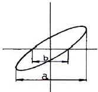
- Q=cos-1 b/a
- Q=cos-1 a/b
- Q=sin-1 b/a
- Q=sin-1 a/b
(정답률: 71%)
72. 비트법에 의해 주파수를 측정하는 주파수계는?
- 그리드 딥미터
- 흡수형 주파수계
- 레헤르선 파장계
- 헤테로다인 주파수계
(정답률: 71%)
73. 디지털 볼트미터(DVM)의 분류 방식 중 옳지 않은 것은?
- 부호판 변환방식
- 추종 비교방식
- 2중 적분방식
- 자동 평형방식
(정답률: 64%)
74. L1=10[mH], L2=20[mH]인 코일 2개를 직렬로 연결하고 합성 인덕턴스를 측정했더니 40[mH]가 되었다. 이때 이 코일의 상호 인덕턴스는?
- 5[mH]
- 10[mH]
- 15[mH]
- 20[mH]
(정답률: 52%)
75. 오실로스코프의 수평 편향 시스템의 기본 구성에 속하지 않는 것은?
- 트리거 회로
- 수평 증폭기
- 스위프 발진기
- 이상 신호 발생기
(정답률: 62%)
76. 절연물의 유전체 손실각을 측정하는데 쓰이는 측정기는?
- 맥스웰 브리지
- 셰링 브리지
- 전위차계
- 코올라우시 브리지
(정답률: 75%)
77. 디지털 전압계의 풀 스케일이 10[V]이고 4비트 A/D 변환기인 경우 분해능은?
- 0.310[V]
- 0.625[V]
- 0.875[V]
- 1.250[V]
(정답률: 69%)
78. 내부 저항이 무한대인 전압계로 단자 A-B간의 전압을 측정하면?
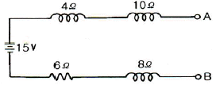
- 2[V]
- 8[V]
- 12[V]
- 15[V]
(정답률: 80%)
79. 어떤 전파를 레헤르선으로 측정하니 인접한 전압이 최대로 되는 점 사이의 거리가 1.5[m]일 때 주파수는 몇 [MHz]인가?
- 100[MHz]
- 150[MHz]
- 200[MHz]
- 250[MHz]
(정답률: 49%)
80. Q 미터(Q meter)로 측정할 수 있는 것은?
- 공진 주파수
- 진공관 정수
- 전계강도
- 코일의 실효저항
(정답률: 68%)